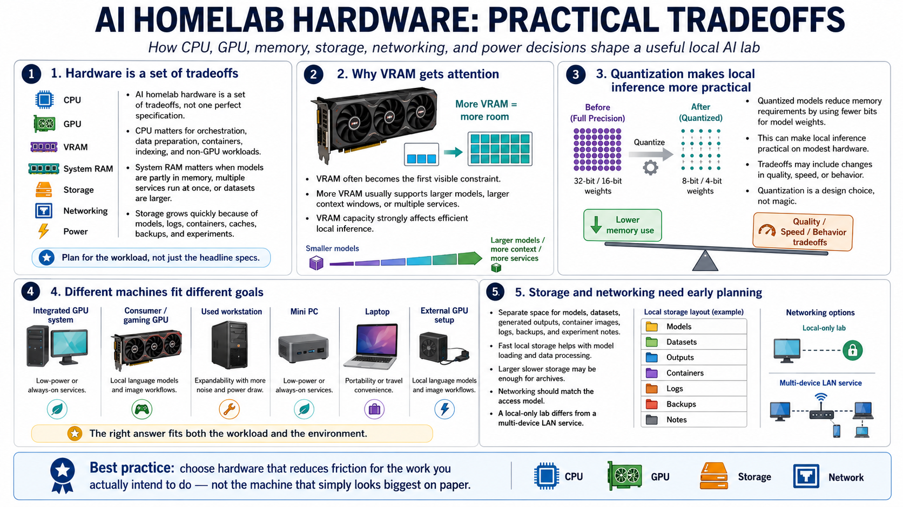

Hardware Fundamentals
Connecting to LMS... Progress: in progress

Narration
AI homelab hardware is a set of tradeoffs across CPU, GPU, VRAM, system RAM, storage, networking, and power. The CPU still matters for general orchestration, data preparation, containers, indexing, and workloads that do not fit cleanly on the GPU. System RAM matters when models are loaded partially in memory, when multiple services run at once, or when you work with larger datasets. Storage matters because models, logs, containers, caches, backups, and experiments grow quickly.
VRAM is often the constraint people notice first because it affects which models and context sizes can run efficiently on the GPU. More VRAM usually gives you more room for larger models, larger context windows, or multiple services. Quantized models can reduce memory requirements by representing model weights with fewer bits, often with tradeoffs in quality, speed, or behavior. Quantization can make local inference practical on modest hardware, but it is still a design choice, not magic.
There is no single perfect machine. Integrated GPUs, consumer GPUs, used workstations, mini PCs, laptops, and external GPU setups can all be reasonable depending on the goal. A low-power system may be excellent for always-on services and embeddings. A gaming GPU may be useful for local language models and image workflows. A used workstation may offer expandability at the cost of power and noise. The right answer is the machine that fits the workload and the environment.
Storage planning deserves early attention. Separate space for models, datasets, generated outputs, container images, logs, backups, and experiment notes keeps the lab easier to manage. Fast local storage helps with model loading and data processing, while larger slower storage may be enough for archives. Networking should match the access model. A local-only lab has different needs than a multi-device LAN service. Good hardware planning is not about chasing specifications. It is about reducing friction for the work you actually intend to do.